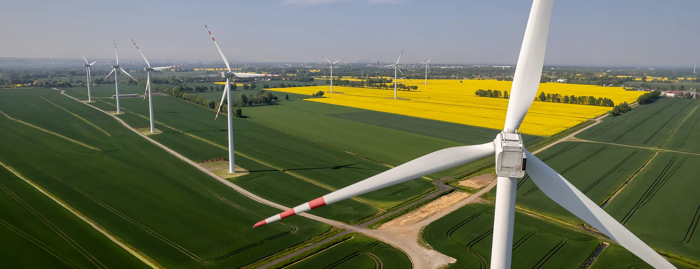
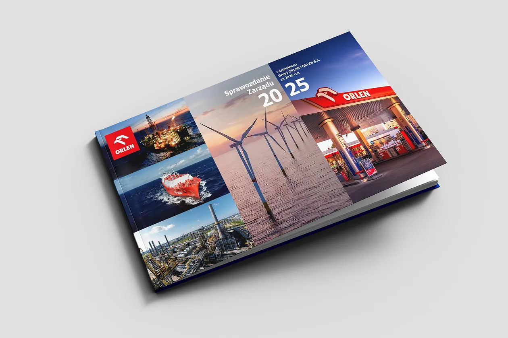

ORLEN
The Energy of
Tomorrow
Starts Today
Management Board’s Report on the operations of the ORLEN Group in 2025
Our company
CEO Letter
“A record-breaking year, powered by the commitment of the entire ORLEN Group team.”
In 2025, the Group completed the largest capital investment programme in its history and reached the highest market value among companies listed on the Warsaw Stock Exchange. These results provide a strong base for the next stage of ORLEN’s transformation.
Ireneusz FąfaraPresident of the Management Board
Chief Executive Officer, ORLEN S.A.
Chief Executive Officer, ORLEN S.A.
Integrated operations
Learn how we operate
and create value
ORLEN is the largest multi-energy group in Central and Eastern Europe. Its integrated value chain connects resource supply, processing, power generation, distribution and retail services.
Development
The ORLEN Group
Strategy to 2035
ORLEN balances secure energy supplies with decarbonisation and a changing regulatory environment. The plan combines the strengths of established operations with faster emissions reduction and renewable-energy development.
4integrated business segments
2035strategic horizon
2050Net Zero ambition
Our performance
Key figures
for 2025
Strong operations produced LIFO EBITDA of PLN 41.5 billion and operating cash flow of PLN 47.2 billion while ORLEN continued a major investment programme and preserved a sound financial position.
Upstream & Supply
Security through diversified resources
Domestic and international production, gas imports, trading and logistics reinforce dependable supply across the region.
Sustainability
Transformation built
around responsibility
“The energy transition reaches technology, infrastructure, regulation and — above all — the people who deliver change every day.”Ireneusz Fąfara, President of the Management Board, ORLEN S.A.
Management Report
ORLEN Group and
ORLEN S.A. in 2025
The complete 308-page report includes the business model, strategy, operating environment, segment results, financial position, Sustainability Statement, corporate governance and appendices.
Download PDF ↓